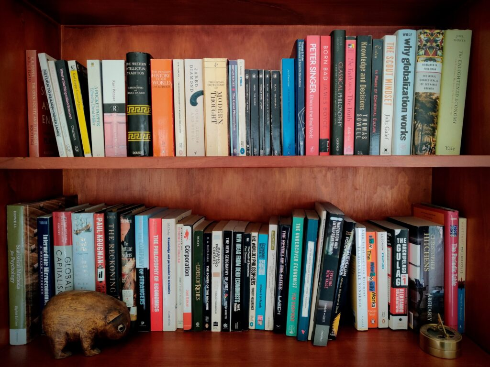

Many of us still venerate books. The evidence says they are not very good at what is supposed to be their primary job: putting new ideas in our heads. We are slowing developing new ways to achieve this old aim.

Many of us own thousands of these. They cost too much, too many have too much filler, and our bookshelves allow only the crudest form of search function.
I'd better just come out and say it: compared to the emerging alternatives, I don't think most books work very well. In 2023, we have a great many potential alternatives, and we need to keep exploring them. Eventually, I expect that search to pay off, perhaps in a big way.
If you have a view about whether books actually help people take in new ideas and perspectives, tell us in the comments.
But first, here are takes on books' shortfalls, from four critics.
Deirdre McCloskey: "Look, everyone has this problem".
The latest person to remind me of books' weaknesses is Professor Deirdre McCloskey, the polymathic former professor of just about everything (economics, English, communication, philosophy, history and classics) at universities from Harvard to Rotterdam.
McCloskey is not really an enemy of books. She couldn't be: so far she's written 18, co-authored another, edited or co-edited nine more, and has another soon to go to press. Her book Economical Writing is widely considered (including by me) to be the best book yet written on the art of writing for the social sciences.
But the last time I talked with McCloskey, she revealed that she often struggles with reading books. She spoke to me for a podcast series I've started, called Shorewalker on Reports; indeed, I gave her a whole episode of her own. She's great fun. Here's a transcript of part of that episode (and if you like it, please subscribe in Apple, Google, Spotify, Pocket Casts or by dropping the RSS feed into your podcast software):
(David Walker: One of the most useful ideas in 'Economical Writing' ... is that readers are sort of lost and unsatisfied a lot of the time.)
Deirdre McCloskey: All the time.
(David Walker: Almost nobody ever says this.)
Deirdre McCloskey: You're always confused. I am, aren't you? (DW: Yep.) I read something; half the time I don't know what I'm reading. I forget ... wait, wait, what's ... what's this mean ... what?
(David Walker: And I discovered slowly ... that a lot of people, like me, don't finish many of the books that they start.)
Deirdre McCloskey: I don't ever finish a book.
(David Walker: You suggest that writers need to work very hard to keep readers awake.)
Deirdre McCloskey: Just purely awake. I had a wonderful colleague in the history department at the University of Iowa, Bill Aydelotte. Like me he was a British economic, British historian. And Bill said: 'The big thing in scholarship is to keep awake'. He said: 'If you're going to be a scholar, you're gonna have to read a lot of boring things. So you've gotta learn how to stay awake.' And so vice versa? You gotta – you can't bore people ... ? You know, that seems an awfully harsh standard for some kid who doesn't know writing very well. But you got to keep them awake.
(David Walker: Also, in that book, you talk about how people get lost very easily in the words. You mentioned talking to a graduate student who assumed he had some sort of mental deficiency, because he kept getting lost in the middle of a paragraph.)
Deirdre McCloskey: That's right. He was amazed when I told him: 'Look, everyone has this problem’. He thought he was just stupid.'
Pamela Paul: "What I don’t remember ... is everything else"
McCloskey was the first person to suggest outright to me that a lot of scholarly writing put a lot of people to sleep. But she wasn't the first person I encountered pointing out the disconnect between our books and our brains. That would be Pamela Paul, former editor of The New York Times Book Review, a role which makes her, like McCloskey, a Big Book Person. And back in 2018, Paul made a big, brave and revealing confession about how our relationship with books fails us. “I remember the book itself,” she told The Atlantic, speaking about her general experience of reading. “I remember the physical object. I remember the edition … I usually remember where I bought it, or who gave it to me.” And then she said it: “What I don’t remember – and it’s terrible – is everything else.” Yes, Pamela Paul, New York Times Book Review editor, was saying she forgets most of what she actually reads. She even gave an example. She read Walter Isaacson’s biography of Benjamin Franklin, and two days after finishing it, she doubted she could even offer a general timeline of the American Revolution. That struck a chord. I mostly read non-fiction, and I have often been shocked by the way I forget much of a book’s content within a few days of reading it. I started to think of it as the Pamela Paul Effect. For instance, I've read most of Karl Popper's The Open Society and ItsEnemies Volume II at least three times (and parts of it more), and listened to it twice on Audible, and I still can't accurately recall even the rough formulation of its most famous six sentences. Brenda, my wife, reads a lot of fiction, and has a pretty similar experience. Indeed, I’m now pretty sure that most people share this experience. For getting ideas into our heads, books just don't work well.
Tyler Cowen: "Smart people often overrate books"
Another person to make this point is the US economist Tyler Cowen, who blogs at the wonderful Marginal Revolution blog. Cowen is a voracious reader; he famously uses Marginal Revolution to note and quote from many books. Given the readership, anyone publishing a volume on economics or a related topic would be mad not to send him a copy, so he can pretty much read what he wants. So I was surprised to read him saying that he finishes about one book in 10 – not much more than McCloskey. Long before my latest conversation with McCloskey, Cowen was the first person I heard confess to leaving most books unfinished, and it left a mark. Until then, I'd treated unfinished books as mild embarrassments. Yet on brief consideration, it seems the obviously sensible course. Most writers know that people abandon books, so they put most of their best ideas up the front. Cowen gets most of his books for free, and he lives in a world where you can't hope to read everything. So read a bit of a book, extract most of its best ideas, see how it goes, and only keep going for a while if you really like it. In 2019 I had the opportunity to talk with Cowen. He argued not only that books are a bad way of teaching, but that they often have less to teach than their impressive 300 pages would suggest. "Smart people often overrate books," he told me drily. "Too many of them are puffed-up magazine articles ... You can have a wonderful 600 page history book. Nothing wrong with the book. But if you read it, you just may not remember that much of it. And I'm not sure it's the optimal thing for everyone to do. So I would say they're somewhat overrated by people who read them."
Andy Matuschak: "Books are surprisingly bad at conveying knowledge"
For all that they question books' effectiveness, for all that they need workarounds to help them retain what they most want to remember – for all that, McCloskey and Paul and Cowen all still take books very seriously. If you want a really seditious attitude, you need to look outside the bookish circles in which they move. And there you will find researcher Andy Matuschak, former head of R&D at the online educator Kahn Academy. a few years Matuschak came out as a fully-fledged Book Sceptic, writing a website essay titled Why books donʼt work. People enjoy reading books, he said; they just mostly don't absorb very much knowledge out of them:
[Explanatory non-fiction books] ... aim to convey detailed knowledge. Some people may have read 'Thinking, Fast and Slow' for entertainment value, but in exchange for their tens of millions of collective hours, I suspect many readers—or maybe even most readers—expected to walk away with more. Why else would we feel so startled when we notice how little we’ve absorbed from something we’ve read?
All this suggests a peculiar conclusion: as a medium, books are surprisingly bad at conveying knowledge, and readers mostly don’t realize it
Experience has taught Matuschak that people learn in a number of ways with varying degrees of effectiveness. But mostly not through books: they work only occasionally, usually in the hands of “active readers” who react to the text as they go, turning over and comparing and analysing and recombining ideas as they read, often making summary notes as they go.
Beyond words on the screen
Before most people got used to on-screen reading, the book not surprisingly seemed the supreme source of knowledge. It was harder to see then that not every great idea needed or deserved the same 300 pages. It was harder still to see that giving people the ability to publish their ideas electronically via the Internet – in words with hyperlinks, or as podcasts or YouTube videos or databases or tweets or TikTok clips – might enrich everyone's lives (at the same time as exposing everyone to the sorts of squabbles of ideas that once thrived only in academia). Books have held sway as the supreme sources of knowledge at least since the printing press appeared. But we're emerging from the world of the book into a richer universe, one in which books are one of many ways to absorb knowledge. People like Matuschak are working on better ways to absorb information and ideas – in Matuschak's words, to “design mediums in which 'readers' naturally form rich associations between the ideas being presented”. The surprise is that we seem at the moment to be making quite slow progress. But don't bet on progress being slow forever. Note 1: At some point I hope to post a sequel to this article, exploring the most promising techniques, from Matuschak and others, for improving people's ability to absorb ideas.Note 2: I should note here John Locke's insight on how to maximise the benefits of reading: “Reading furnishes the mind only with materials of knowledge. It is thinking makes what we read ours.”
Andrew Beezley asked me to post this in comments on his behalf. I have no idea why the system won't let him comment.
I find that kindle improves my retention because it supports active involvement. You can make notes of what you like and don't like as you read. You can highlight. And then you can download all your notes from Amazon Goodreads. I often take these notes and organise them into a summary transcript. If you read this a couple of times, say a few weeks later, then retention is way better.